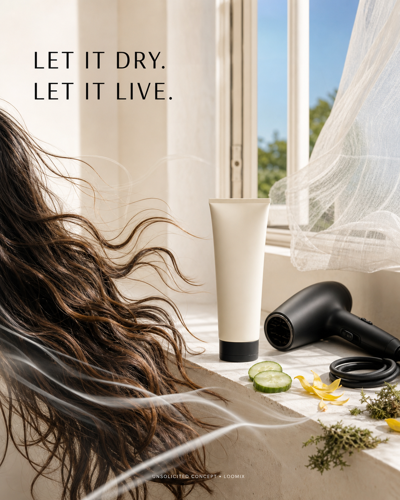

Concept created by LoomixUnsolicited concept
OdeleReels + TikTok9:168 seconds
Air Dry Styler — Let It Dry. Let It Live.
An unplugged blow dryer rests on a bright windowsill while a natural breeze moves through damp hair. The strand settles into soft, separated, artfully rumpled waves—effortless rather than overdone.
Create with LoomixView official product
Hook options
“Let it dry. Let it live.”
“Unplug. Scrunch. Go.”
“Perfectly imperfect, by air.”
8-second storyboard
Open on an unplugged blow dryer.
Apply one small ribbon of cream to damp hair.
Open the window and let the curtain lift.
Scrunch once as the breeze moves through.
Reveal soft separation and natural texture.
End on the tube, relaxed waves, hook, and CTA.
Caption direction
A low-maintenance morning ritual that makes air-dried texture feel intentional: light conditioning, soft separation, and the freedom to skip the blowout.
Made for rapid testing
Loomix turns one product image into a storyboard, short-video direction, captions, and ready-to-post ad copy.
This is an unsolicited creative concept made by Loomix for demonstration purposes. Loomix is not affiliated with or endorsed by Odele.